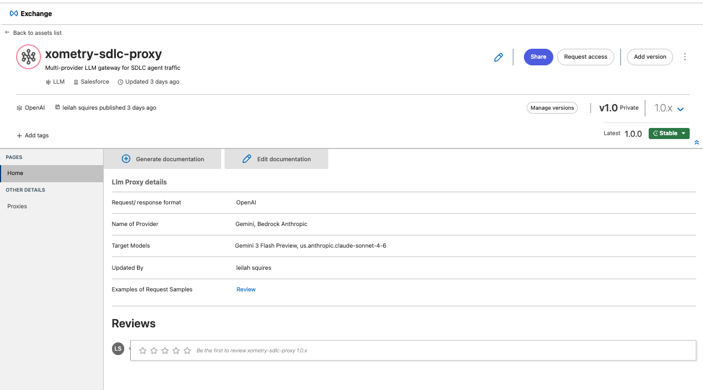
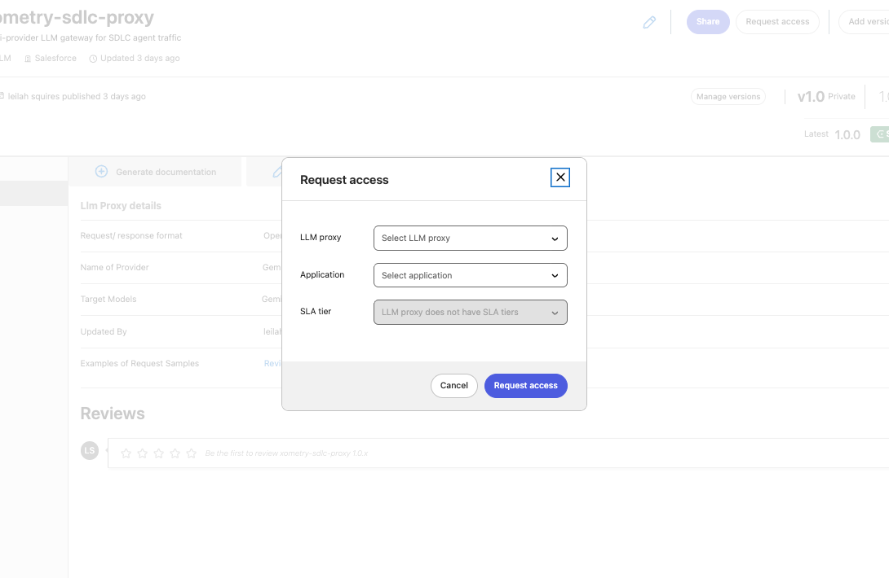
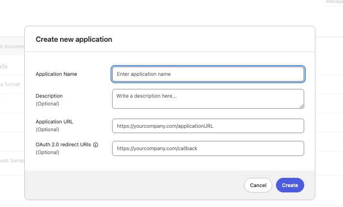
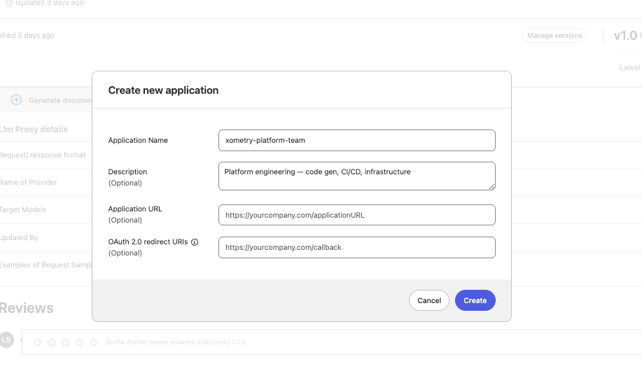
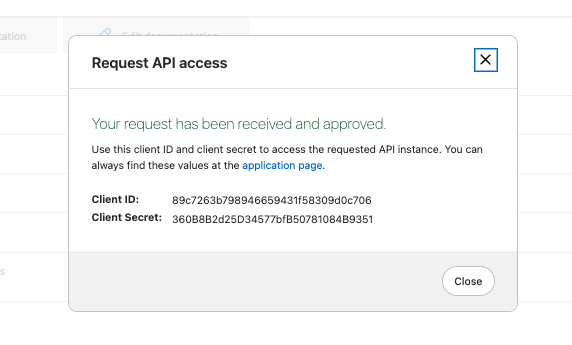
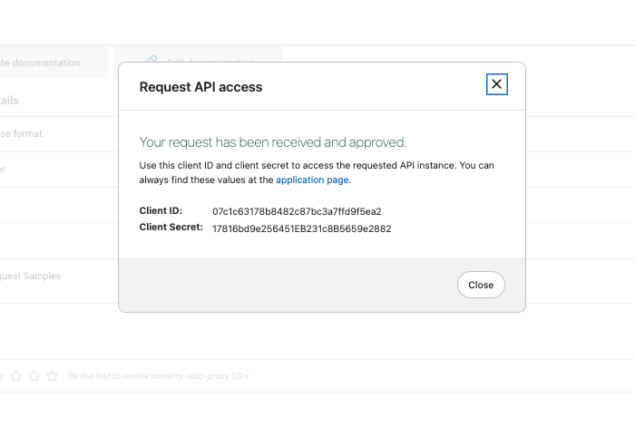
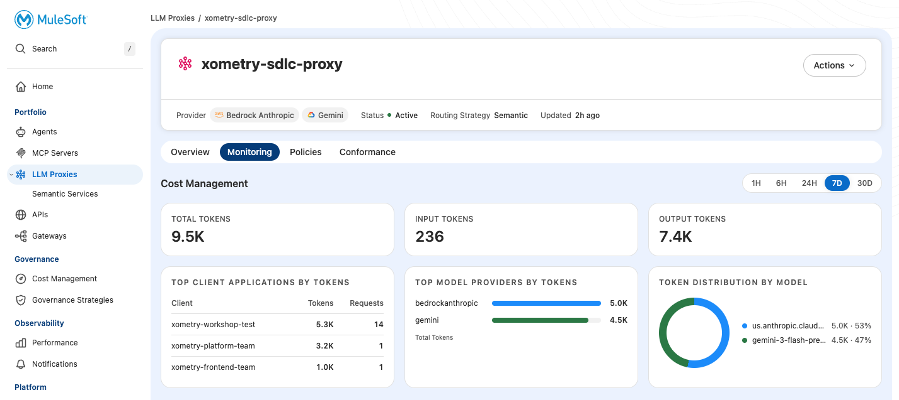
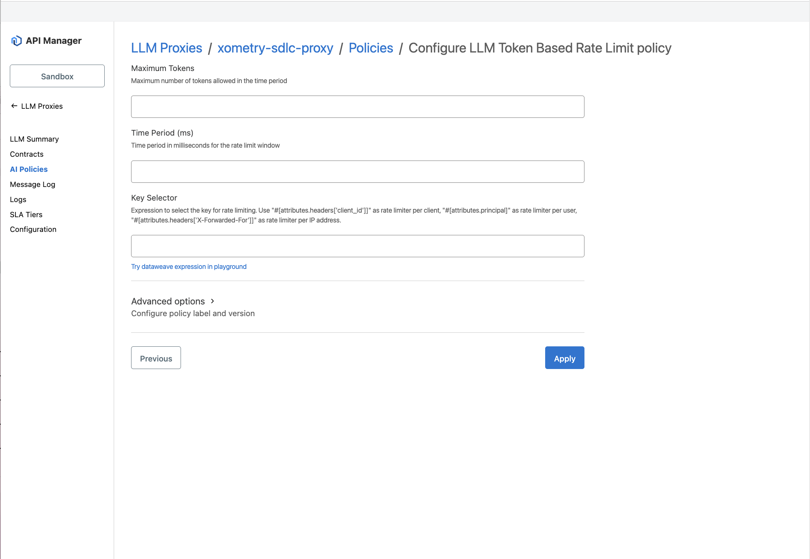
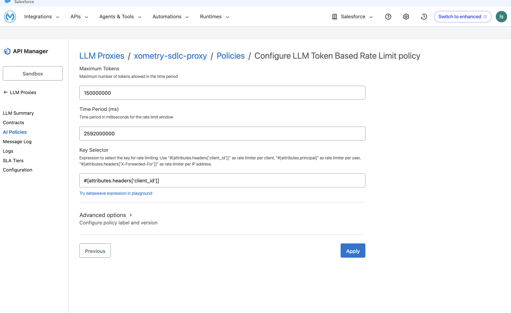

Lab 4: Token Budgets & Attribution
Add per-team budgets and see who's spending what
Overview
You've built the routing layer. Now you'll add the FinOps layer — per-team budgets and attribution tracking. This is the lab that answers Jeff Arbor's question: "Who's spending what?"
Business scenario: Your 500-person engineering org has multiple teams consuming LLM tokens. Without attribution, you see one giant bill. With client applications and budgets, you see exactly which team is driving costs — and you can cap runaway spend before it happens.
"We have seen token usage go from an annualized half a million dollars to $3 million in the span of about a month... I would love some better guard rails around and observability around tailoring and managing those things." — Jeff Arbor
How Attribution Works
Each team gets unique credentials. The proxy tracks token consumption per client ID. You see the breakdown in Cost Management.
Step 1: Navigate to Exchange
The first step is creating client applications that represent different teams.
- In Anypoint Platform, click Exchange in the top navigation
- Search for
xometry-sdlc-proxy - Click into the LLM Proxy asset

When you deployed the LLM Proxy, it was automatically published to Exchange as an API asset. This is how you manage access to it.
Step 2: Create Client Application — Platform Team
- Click Request access (top right of the asset page)

- Click Create a new application

- Fill in:
| Field | Value |
|---|---|
| Application Name | xometry-platform-team |
| Description | Platform engineering — code gen, CI/CD, infrastructure |

- Click Create
- Important: Copy the Client ID and Client Secret immediately — you won't see the secret again

- Click Close to complete
Step 3: Create Client Application — Frontend Team
- Click Request access again
- Click Create a new application
- Fill in:
| Field | Value |
|---|---|
| Application Name | xometry-frontend-team |
| Description | Frontend team — UI components, docs, triage |
- Click Create
- Copy the credentials

- Click Close to complete
Step 4: Test Attribution with Different Credentials
Send requests as each team to generate attribution data.
Request as Platform Team
curl -X POST "https://agent-network-ingress-gw-2l91ch.4o8hak.usa-e2.cloudhub.io/xometry-sdlc/responses" \
-H "Content-Type: application/json" \
-H "client_id: PLATFORM_TEAM_CLIENT_ID" \
-H "client_secret: PLATFORM_TEAM_CLIENT_SECRET" \
-d '{"input": "Write a Python function to parse webhook payloads"}'Request as Frontend Team
curl -X POST "https://agent-network-ingress-gw-2l91ch.4o8hak.usa-e2.cloudhub.io/xometry-sdlc/responses" \
-H "Content-Type: application/json" \
-H "client_id: FRONTEND_TEAM_CLIENT_ID" \
-H "client_secret: FRONTEND_TEAM_CLIENT_SECRET" \
-d '{"input": "Summarize the key changes for the sprint review"}'Use Hoppscotch — paste the curl command and it converts/runs it for you.
Step 5: View the Cost Management Dashboard
- Navigate to Agent Fabric → LLM Proxies →
xometry-sdlc-proxy - Click the Monitoring tab

You should see:
Token Consumption by Client
| Client Application | Tokens | Requests |
|---|---|---|
| xometry-platform-team | (varies) | 1+ |
| xometry-frontend-team | (varies) | 1+ |
Token Distribution by Model
The pie chart shows the split between expensive (Claude) and cheap (Gemini) models.
"Instead of one $3M AWS bill, you now see Platform team used X tokens on Claude, Frontend used Y on Gemini. This is the visibility Jeff was asking for."
Step 6: Configure Token Budgets (Rate Limiting)
Token budgets are configured via the LLM Token Based Rate Limit policy.
- Go to API Manager → LLM Proxies →
xometry-sdlc-proxy→ Policies - Click + Add Policy
- Search for LLM Token Based Rate Limit

- Configure:
| Field | Value |
|---|---|
| Maximum Tokens | 150000000 (150M per month) |
| Time Period (ms) | 2592000000 (30 days in milliseconds) |
| Key Selector | #[attributes.headers['client_id']] |

- Click Apply
The Key Selector ensures each client_id gets its own 150M token budget. When a team exceeds their limit, they receive a 429 response until the time period resets.
"The Platform team has 150M tokens/month. If they burn through it by week 2, they're blocked until the period resets — or an admin manually increases their limit. This is the guardrail Jeff wanted."
Key Takeaways
| Concept | What You Proved |
|---|---|
| Per-team credentials | Client applications = attributable identity |
| Token budgets | Hard limits prevent runaway spend |
| Cost dashboard | See who's spending what, on which models |
| Audit trail | Individual request-level tracking for compliance |
The FinOps Story
| Before (Raw Bedrock) | After (LLM Proxy) |
|---|---|
| One AWS bill, $3M | Per-team breakdown |
| "Someone" is spending | Platform team: $2.1M, Frontend: $900K |
| No guardrails | Budget caps with alerts |
| No visibility into model usage | See Claude vs Gemini split |
| "Why did costs spike?" | Audit trail to the request |
Lab 4 Complete — Module A Complete!
You've built a complete LLM cost control layer:
| Lab | What You Built |
|---|---|
| Lab 1 | LLM Proxy with 2 provider routes |
| Lab 2 | Model-based routing (developer chooses) |
| Lab 3 | Semantic routing (proxy chooses based on prompt) |
| Lab 4 | Per-team attribution and token budgets |
This is the control plane that transforms "$3M mystery bill" into "Platform team spent $X on code gen, Frontend spent $Y on docs, and here's the audit trail."
What's Next
After Module A, participants continue with:
- Module 3 (Orchestrate): Deploy an Agent Broker that uses this LLM Proxy
- Module B (Guided Determinism): Configure the broker to make deterministic routing decisions
The LLM Proxy you built is the foundation — brokers and agents call through it, getting automatic cost tracking and routing for every LLM request.